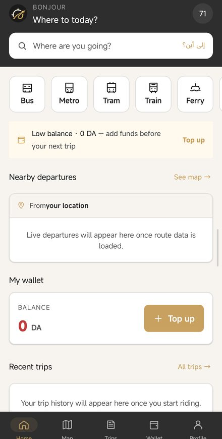
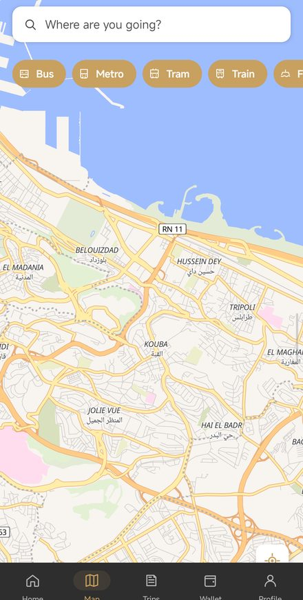
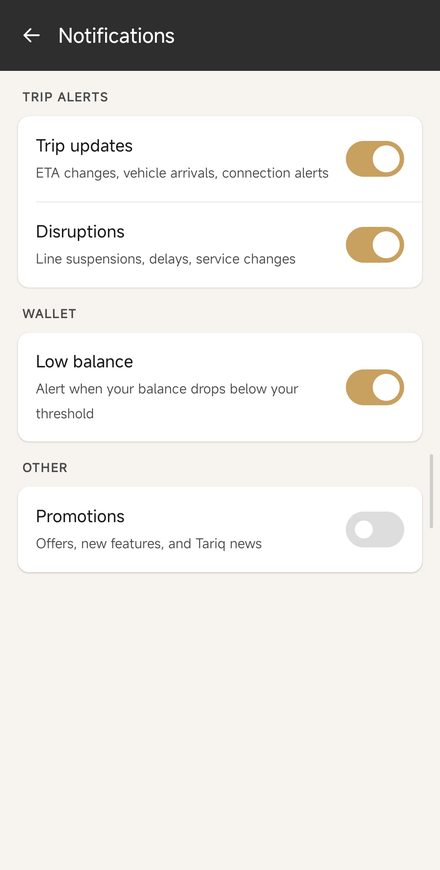
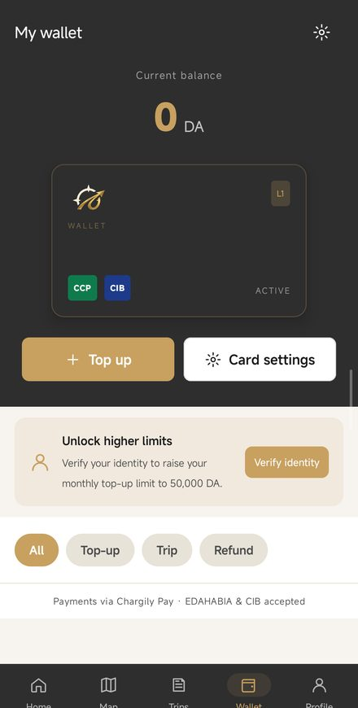

Tariq
One tap. Every line. Every city.
Nine modes of transit in Algiers — plan, ride and pay in one free app.
One tap. Every line. Every city.
Nine modes of transit in Algiers — plan, ride and pay in one free app.
Passenger stories
Tariq plans the route, guides the ride live, and pays the fare. Here is what that feels like.
Modes of transit
Nine modes. One network. One app.
Metro (Lines 1–3) · Tramway · ETUSA Bus · Private Bus · Téléphérique · Télécabine · SNTF Train · Navette Maritime · Taxi
The app
Real screens from the app we're bringing to Algiers.
The app is free — you pay only your fares.

Home
Departures near you, your wallet, your recent trips — one screen, ready when you are.


Plan & Ride
Search like you talk and get a route across the whole network — then the app keeps watch: ETA changes, vehicle arrivals, disruptions, door to last stop.

Pay
Your balance, your tickets, your history — in dinars, where they belong. Top up in the app — built around how Algiers already pays, CCP and Carte Dahabia included.
Cities
Algiers live today — more cities on the way.
Early access
Leave your email and we'll send one message when Tariq opens in Algiers. No newsletter, no noise.
You're on the list. We'll email you once, at launch.
We'll email you once, at launch. That's it.